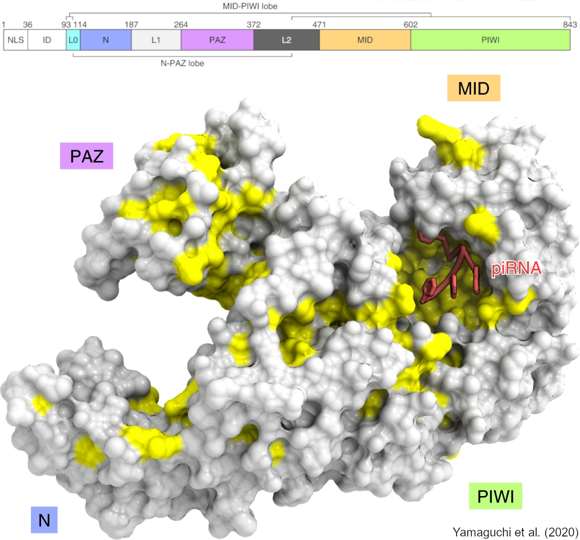

piRNA InmunoPrecipitation database
(piRNA-IPdb v2)
What is a piRNA
PIWI-interacting RNAs (piRNAs) are single-stranded small non-coding RNAs initially discovered in germ cells with a role as defenders of genomic integrity in the germline, acting as post-transcriptional repressors of transposable elements. With a regular range of 24-32 nucleotides, piRNAs are associated with the PIWI clade of Argonaute family proteins (in the mouse MIWI, MILI or MIWI2). Processed piRNAs preferentially accommodate uridine residues at 5’-end and 2'-O-methylated 3'-end to increase stability of these molecules. piRNAs have also been detected in somatic cells with diverse potential functions indicating its high plasticity and pleiotropic activity.
Database
We selected those piRBase datasets obtained by immunoprecipitation from wild-type mice. Using a custom bioinformatic pipeline we analyze and calculate each piRNA count per million for every dataset when these data were available. As applied in first version [1].
In total, 23 datasets were selected resulting in 18,904,992 unique sequences that were detected as bound to any PIWI protein. It should be noted that the focus of piRNA studies and sequencing has been on the germline and in particular on the male line. The heterogeneity of the datasets composition assures the presence of piRNAs expressed in different moments of development (adult or distinct embryonic stages), in different biological samples (testes or spermatids) and bound to different PIWI protein (MIWI, MILI or MIWI2).
Database statistics
Full datasets
Sequences
Reads
Cite this work
First release:
[1] Larriba, E., del Mazo, J. An integrative piRNA analysis of mouse gametes and zygotes reveals new potential origins and gene regulatory roles. Sci Rep 8, 12832 (2018). https://doi.org/10.1038/s41598-018-31032-1
Present work:
Paper in preparation
Image:
[2] Yamaguchi, S., Oe, A., Nishida, K.M. et al. Crystal structure of Drosophila Piwi. Nat Commun 11, 858 (2020). https://doi.org/10.1038/s41467-020-14687-1
About us
CIB Margarita Salas, CSIC
C/ Ramiro de Maeztu 9, Madrid, Spain
Email: odei.barrenada@cib.csic.es & jdelmazo@cib.csic.es